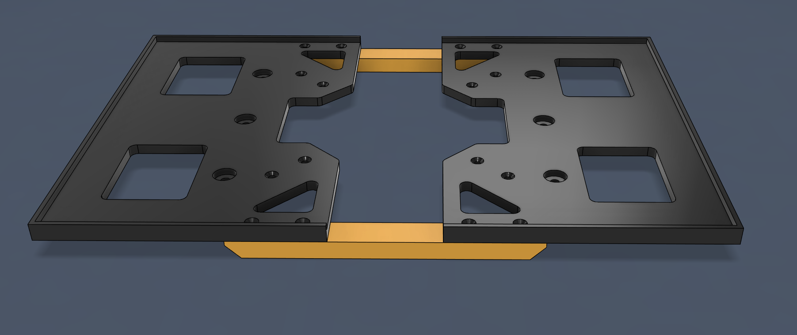
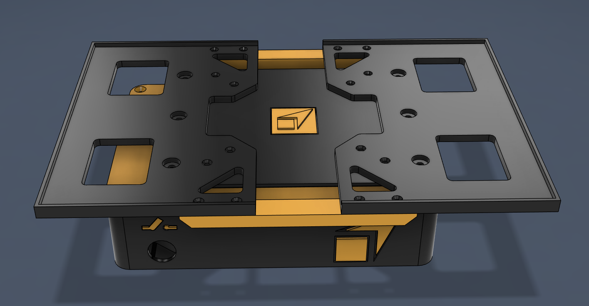
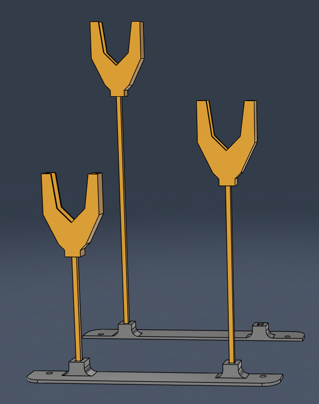
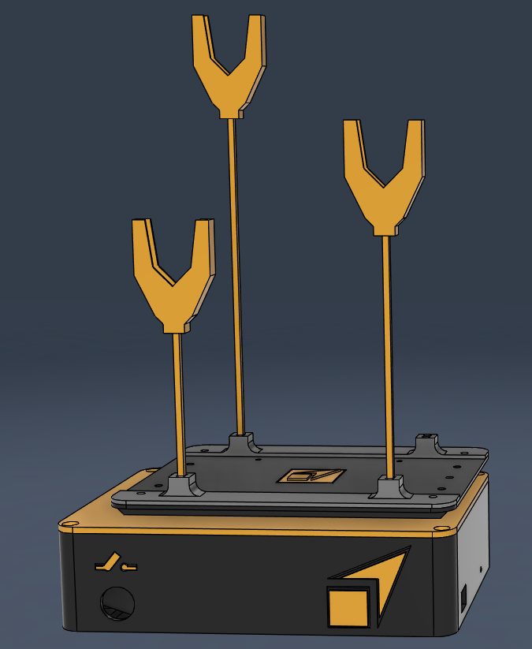

Assembly Installation 🛠️
Requirements
- Maximum load: 2 kg
- The table must be placed on a level surface.
Assembly kit interface for MOLA
1 - Assemble the interface using the included screws.

2 - Assemble the interface to P-Shaker using the included screws.

Assembly inverted pendulums
The inverted pendulums require a coin to operate. Depending on the weight of the coins, the resonance frequency of the pendulum will change. The pendulums are designed to resonate between 0.5 Hz and 10 Hz, and you can add between 1 and 3 coins depending on their thickness.
1 - Assemble the inverted pendulums according the image.

2 - Assemble the interface to P-Shaker using the included screws.
Note: The screws that anchor the inverted pendulums to the P-Shaker must be inserted from the bottom up, so that they protrude on the top side—not underneath the base.

The inverted pendulums come pre-assembled. If you notice any looseness at the base or parts that don’t fit snugly, please apply silicone—either cold silicone or hot glue. The pendulums are shipped pre-assembled to avoid damage during transport.